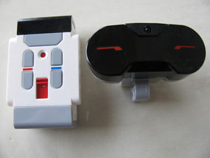

June 19, 2015
First things first: All Hail Torben Hoffmann! Torben is pioneering the use of Elixir to control Mindstorm robots. His talk is what got me fired up. Torben generously offered to help as I stumble along. (Thank you!)
I ordered Lego Mindstorm EV3 kit and a microSD card. They arrived yesterday.
As soon as I can pry the EV3 from the hands of my 12 year-old son Will, I will follow the instructions from Torben's Elixir Conf 2015 slides and:
- Install the ev3dev Linux kernel with EV3 hardware drivers
- Install Erlang and Elixir on the card
- Install Torben's Elixir EV3 and EV3 Bluetooth libraries
- Boot the EV3 brick from the SD card.
- Build a robot (with Will of course)
- Write "hello robot" in Elixir and run it
I will be working from my Lenovo G710 laptop running Ubuntu 14.04
Let's see how easy or hard it will be for me to get there.
Installing ev3dev on the EV3 brick
Easy peasy. 30 minutes later: 
June 22, 2015
Installing Erlang and Elixir
Installing Erlang via
apt-get install Erlangtook about 2 hours (the brick with a microSD card is not exactly blazing fast) but went without a glitch.
I then installed Elixir from the pre-compiled package by doing
wget https://github.com/elixir-lang/elixir/releases/download/v1.0.4/Precompiled.zip apt-get install unzip mkdir /opt/elixir unzip Precompiled.zip -d /opt/elixir
and then adding /opt/elixir/bin to the PATH in my .bashrc by logging out root and logging in as myself (the ev3dev setup process had me add a user for myself) and adding this at the end of my .bashrc
export ELIXIR=/opt/elixir PATH=$PATH:$ELIXIR/bin
and then doing
source .bashrc
That took very little time and now Elixir runs on the EV3. How cool is that? 
Bluetooth woes
I spent more hours than I care to admit trying to establish a network connection via Bluetooth. The first roadbloack was missing Bluetooth firmware on my laptop. I took me a while to figure this one out. Once Bluetooth on my laptop was functional, I could successfully pair my laptop's with the ev3dev over Bluetooth.
Next step was establishing a network connection over Bluetooth. For that, I needed to install Bluetooth Manager on my laptop as instructed and setup network settings. No problem.
This is where I ran into a roadblock I have yet to overcome. The "Network Connection" button in  won't do anything.
After googling the living daylight out of this, I suspect this may have to do with missing Bluetooth security permissions on my laptop. I have an idea on how to go about it but now, for some reason,
Ev3dev won't reboot. So I am re-initializing the microSD card with a fresh image and see how far I can get this time. This is frustrating.
won't do anything.
After googling the living daylight out of this, I suspect this may have to do with missing Bluetooth security permissions on my laptop. I have an idea on how to go about it but now, for some reason,
Ev3dev won't reboot. So I am re-initializing the microSD card with a fresh image and see how far I can get this time. This is frustrating.
In the meanwhile, Will is racing along building a robot and is having a grand old time. 

June 27, 2015
@&^%+%$ Bluetooth!
After spending way too many hours trying to establish a Bluetooth connection between EV3DEV and Ubuntu 14.04 I gave up in disgust. I won't describe my many unsuccessful attempts. I decided to try WiFi instead and I bought a USB WiFi dongle.

ev3dev recognized the WiFi dongle after a reboot and I thought the rest would be easy. Wrong. Entering my (long) WiFi password turned out to be an ordeal. The onscreen keyboard on the EV3 is barely usable and I had to race to beat a timeout - if I took too long, the EV3 would abort the process. I didn't want to change my password and reset all my devices. So it took me a good half-hour to hone my skills and beat the clock. I finally got a connection.
I can finally connect to the EV3 without a USB cable.
Yeah.
Torben's NDC 2015 talk
I watched Torben's NDC 2015 talk on Elixir and Mindstorm where he bravely silences his inner chicken and gives a live demo of an Elixir-controlled robot. The demo gods smile upon him and it works! After my dispiriting battle with Bluetooth on Ubuntu, this rekindles my spirit.
I learned from his talk that the EV3 Elixir library is out-of-date with the latest release of ev3dev. I guess my next step is finding out how much of an upgrade is required.
August 17, 2015
My son Will is in camp for two weeks (Robotics, Horse Camp) and has relinquished his death grip on the EV3. Time to make some progress with Elixir robotics!
Accessing the EV3 from Elixir
I completed Elixir modules to...
- interface with the EV3DEV's /sys/class/... file-interface to the EV3.
- expose the tachomotors and sensors (color, infrared and touch) via a domain language
You will find the code in my EV3EX public Github repository. Be warned! It is very much a work in progress.
Admin note: Make sure that the account you log into to execute your code on the EV3 brick belongs to the ev3dev group. Otherwise your code will fail with inufficient file permissions.
Unlike Torben, I eschewed the clever use of macros and opted instead for painstakingly hand-writing functions that hide the idiosycratic details of the EV3DEV interface. My goal was to expose the EV3 via pure functions, hiding as much as possible any file-based state and control.
Here are some usage examples:
Tacho motor
iex(1)> alias EV3.Tachomotor, as: TM
...
iex(2)> [motor|_] = TM. motors # Detect motors and hold on to the first one
[%EV3.Device{class: :tacho_motor,
path: "/sys/class/tacho-motor/motor0", port: "outA",
props: %{commands: ["run-forever", "run-to-abs-pos",
"run-to-rel-pos", "run-timed", "run-direct", "stop", "reset"],
controls: %{duty_cycle: 0, polarity: :normal, position: 0,
ramp_down: 0, ramp_up: 0, speed: 0, speed_mode: nil,
speed_regulation: :off, time: 0}, count_per_rot: 360,
stop_commands: ["coast", "brake", "hold"]}, type: :large},
%EV3.Device{class: :tacho_motor,
path: "/sys/class/tacho-motor/motor1", port: "outB",
props: %{commands: ["run-forever", "run-to-abs-pos",
"run-to-rel-pos", "run-timed", "run-direct", "stop", "reset"],
controls: %{duty_cycle: 0, polarity: :normal, position: 0,
ramp_down: 0, ramp_up: 0, speed: 0, speed_mode: nil,
speed_regulation: :off, time: 0}, count_per_rot: 360,
stop_commands: ["coast", "brake", "hold"]}, type: :medium}]
iex(3)> motor = TM.set_speed(motor, :rps, 1) # Set motor speed to 1 rotation per second
...
iex(4)> TM.brake motor # Stop the motor quickly
...
iex(5)> motor = TM.reset # Reset the motor to its initial state
...
iex(6)> motor = motor |> TM.set_duty_cycle(50) |> TM.reverse_polarity # 50% power and in reverse
...
iex(7)> motor = TM.run_for(motor, 10000) # run for 10 secs
...
iex(8)> IO.puts TM.current_speed(motor, :dps) # Print the current speed in degrees per sec
360
iex(9)> TM.stalled? motor # Is the motor stalled?
false
Lego Sensors
iex(10)> alias EV3.LegoSensor, as: LS
...
iex(11)> sensors = LS.sensors # Detect all connected sensors
[%EV3.Device{class: :sensor, path: "/sys/class/lego-sensor/sensor0",
port: "in3", props: %{mode: "TOUCH"}, type: :touch},
%EV3.Device{class: :sensor, path: "/sys/class/lego-sensor/sensor1",
port: "in1", props: %{mode: "IR-REMOTE"}, type: :infrared},
%EV3.Device{class: :sensor, path: "/sys/class/lego-sensor/sensor2",
port: "in2", props: %{mode: "COL-COLOR"}, type: :color}]
iex(13)> ir = sensors |> Enum.find(&(LS.infrared? &1)) # Get an infrared sensor
%EV3.Device{class: :sensor, path: "/sys/class/lego-sensor/sensor1",
port: "in1", props: %{mode: "IR-REMOTE"}, type: :infrared}
iex(14)> color_sensor = sensors |> Enum.find(&(LS.color? &1)) # Get a color sensor
...
iex(15)> touch = sensors |> Enum.find(&(LS.touch? &1)) # Get a touch sensor
...
Infrared sensor

iex(16)> alias EV3.InfraredSensor, as: IR
...
iex(17)> ir = IR.set_proximity_mode(ir) # Set proximity mode
%EV3.Device{class: :sensor, path: "/sys/class/lego-sensor/sensor1",
port: "in1", props: %{mode: "IR-PROX"}, type: :infrared}
iex(18)> IR.proximity(ir) # Get proximity of obstacle as percent of range
62
iex(19) ir = IR.set_seek_mode(ir) # Set beacon-seeking mode
%EV3.Device{class: :sensor, path: "/sys/class/lego-sensor/sensor1",
port: "in1", props: %{mode: "IR-SEEK"}, type: :infrared}
iex(20) IR.seek_distance(ir, 1) # Get distance (as % of range) of beacon on channel 1
15
iex(21) IR.seek_heading(ir, 1) # Get heading of beacon on channel 1 (far left is -25)
-12
iex(22)> ir = IR.set_remote_mode(ir) # Set remote control mode
%EV3.Device{class: :sensor, path: "/sys/class/lego-sensor/sensor1",
port: "in1", props: %{mode: "IR-REMOTE"}, type: :infrared}
iex(23)> IR.remote_buttons(ir, 1) # What buttons were pushed on remote set to channel 1?
%{blue: :down, red: :up}
Color sensor

iex(24)> color_sensor = CS.set_reflect_mode(color_sensor) # Set to reflected light detection mode
%EV3.Device{class: :sensor, path: "/sys/class/lego-sensor/sensor2",
port: "in2", props: %{mode: "COL-REFLECT"}, type: :color}
iex(25)> CS.reflected_light(color_sensor) # How much light is reflected from the sensor (in % of maximum)?
16
iex(26)> color_sensor = CS.set_ambient_mode(color_sensor) # Set to ambient light detection mode
%EV3.Device{class: :sensor, path: "/sys/class/lego-sensor/sensor2",
port: "in2", props: %{mode: "COL-AMBIENT"}, type: :color}
iex(27)> CS.ambient_light(color_sensor) # How much ambient light is detected (in % of maximum)?
3
iex(28)> color_sensor = CS.set_color_mode(color_sensor) # Set to color detection mode
%EV3.Device{class: :sensor, path: "/sys/class/lego-sensor/sensor2",
port: "in2", props: %{mode: "COL-COLOR"}, type: :color}
iex(29)> CS.color(color_sensor) # What color is detected?
:blue
Touch sensor

iex(30)> alias EV3.TouchSensor, as: TS ... iex(31)> TS.pressed? touch false iex(32)> TS.released? touch true
Development process
I do my work on a laptop running the latest stable releases of Ubuntu, Erlang and Elixir.
The EV3 brick is slow, at least compared to modern, multicore laptops. So I code on my laptop and deploy compiled Elixir code to the brick.

I use a shell script to quickly upload my code to the EV3 brick. It is defined in my laptop's .bashrc file:
alias deploy-ev3='pushd ~/projects; tar -cf ev3ex.tar --exclude="*.git" --exclude="*.*~" --exclude=".gitignore" ev3ex; scp ev3ex.tar jf@192.168.1.125:~jf/ev3ex.tar; popd'
I then unpack the code I uploaded to the brick.

I use the following shell script defined in my EV3 brick's .bashrc file:
alias install-ev3='pushd ~;rm -r ev3ex;tar -xvf ev3ex.tar;popd'
You will need to modify the scripts to fit your own context (ip address, user name, directories etc.)
Once I have uploaded and installed the latest code, I launch the Elixir mix application on the EV3 and play around.
Recent purchases
The EV3 kit was increasingly at risk of becoming dispersed throughout the house so I bought a Plano Tackle Box tool organizer based on the recommendations from the Brick Engineer.
Will volunteered to store the EV3 kit in the organizer and he did a great job. 
We went to Oregon for our summer vacation. In Portland (Or), we visited Powell's Books. Will found this fantastic book about robot-building idioms for the EV3.
He is already exploring the many ideas in the book. I need to catch up with him!